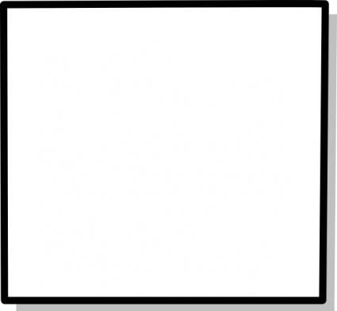
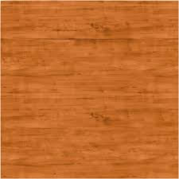

<mat-toolbar>
  <span>Carré parfait</span>
</mat-toolbar>

<div class="container">

  <table class="full-width">
    <tr>
      <th></th>
      <th></th>
    </tr>
  </table>

  <mat-form-field class="full-width">
    <mat-icon *ngIf="!goodAnswerChecker()" matPrefix>chevron_right</mat-icon>
    <mat-icon *ngIf="goodAnswerChecker()" matPrefix class="color-green">check_circle</mat-icon>
    <input matInput type="text" [(ngModel)]="input" class="text-center big-text"/>
    <button mat-icon-button *ngIf="input" matSuffix (click)="input=''">
      <mat-icon>clear</mat-icon>
    </button>
  </mat-form-field>

</div>
<div class="bottom center">
  <a mat-fab class="red" routerLink="/3">
    <mat-icon class="md-24 color-white">arrow_back</mat-icon>
  </a>
</div>
